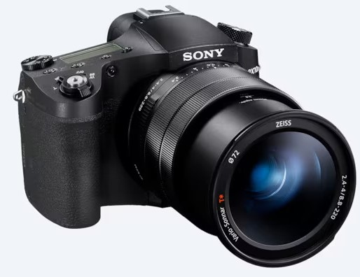

DSC-RX10M4
|  |
Price : RM 7,919
- 0.03-sec.12 AF speed and up to 24fps11 continuous shooting
- ZEISS® Vario-Sonnar T* 24-600mm13 F2.4-4 large-aperture zoom lens
- Approx. 20.1 effective megapixel 1.0-type stacked CMOS sensor with DRAM chip
DSC-RX100M5A
.jpg) |
Price : RM 4,299
- 0.05-sec.14 AF speed and up to 24fps11 continuous shooting
- 20.1 MP 1.0-type stacked CMOS image sensor with DRAM chip
- Pristine ZEISS® Vario-Sonnar® T* 24-70mm13 F1.8-2.8 lens in a pocket-friendly package
Copyright 2023